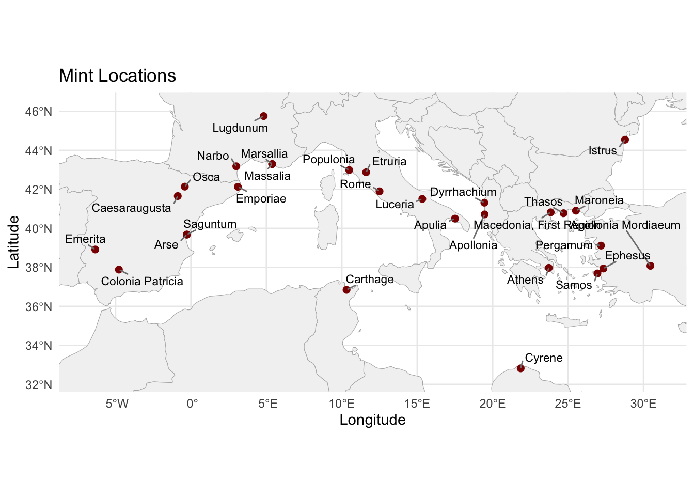

This project was a comprehensive analysis of the spatial distribution of coinage originating from various mints and subsequently deposited in hoards across the Roman world between approximately 500 BCE and 200 CE. By examining patterns in coin dispersal and quantifying the distances between points of minting and findspots, the study aimed to examine the broader dynamics of monetary circulation, and economic integration within the Roman economy. The ultimate objective was to generate insights into the mechanisms of coin movement and to contribute to our understanding of the structure and function of the ancient Roman economic system.
The first step that I’d like to look at is the probability of a coin existing in a certain location base on hoard finds.
Note that there are several errors and mislabeled figures in this. This is for discussion purposes only.
Methodology
Data Source
For the initial analysis, the data from the Coin Hoards of the Roman Republic was accessed. This dataset is based of the work of Crawford (1969), as enhanced by Gruber and Lockyear.
This data can be accessed via the website’s APIs or via the SPARQL endpoint at Nomisma. Not all hoards were appropriate for analysis. This initial analysis only included hoard findspots that had the following:
Geolocation of hoard
At least 1 coin with a known mint
Known mint geolocation
The findspot information was mostly within a 5 kilometer radius of the findspot. Some was 10 km, but that was less often. For security reasons, the exact geolocation was never directly published to prevent theft and looting.
For now, all the findspots meeting the criteria were used, but this may be narrowed in the future.
Data Acquisition
To acquire the data, first a list of all the hoards in the CHRR dataset was gathered from the SPARQL endpoint.
PREFIX dcterms: <http://purl.org/dc/terms/>
PREFIX nmo: <http://nomisma.org/ontology#>
SELECT DISTINCT ?hoardID
WHERE {
?hoard a nmo:Hoard .
FILTER(STRSTARTS(STR(?hoard), "http://numismatics.org/chrr/id/"))
BIND(REPLACE(STR(?hoard), "http://numismatics.org/chrr/id/", "") AS ?hoardID)
}
ORDER BY ?hoardID
Using the list of three digit hoard identifiers from this list, an R program was written to download all of the identified hoards using the schema:
# ---- 3. Define File Formats and URI Templates ----
formats <- list(
xml = "http://numismatics.org/chrr/id/XXX",
rdf = "https://numismatics.org/chrr/id/XXX.rdf",
ttl = "https://numismatics.org/chrr/id/XXX.ttl",
jsonld = "https://numismatics.org/chrr/id/XXX.jsonld",
geojson = "https://numismatics.org/chrr/id/XXX.geojson"
)
‘XXX’ was replaced by the three digit hoard identifier.
Example hoard identifier list:
...
AVO
AVV
AVZ
AZA
AZN
AZU
...
All of the RDF/XML, TTL, JSON-LD, and GeoJSON data were gathered for the hoards. The code for this is not included in this file.
From this dataset, all the coin identifiers in the dataset were extracted. The URIs were in the form:
All of the RDF/XML, TTL, JSON-LD, and GeoJSON data were gathered for the hoards. The code for this is not included in this file.
In addition
Data Processing
The a sample of the initial set of data looks like:
# Load the datahoards_df <-read_csv("/Users/john/Library/Mobile Documents/com~apple~CloudDocs/Home/John/GIS/Roman Italy GIS/Coin Project/chrr_hoards/hoard_geojson/combined_hoards_with_distance.csv")
Rows: 926 Columns: 13
── Column specification ────────────────────────────────────────────────────────
Delimiter: ","
chr (7): hoard_id, hoard_name, hoard_uri, hoard_geometry, mint_name, mint_ur...
dbl (6): hoard_lat, hoard_lon, mint_average_count, mint_lat, mint_lon, mint_...
ℹ Use `spec()` to retrieve the full column specification for this data.
ℹ Specify the column types or set `show_col_types = FALSE` to quiet this message.
# Filter for Rome mint, take first 20 rows, keep all columnsrome_subset <- hoards_df %>%filter(mint_name =="Rome") %>%slice_head(n =10)# Print as a nicely formatted tablekable(rome_subset, caption ="First 20 Hoards with Rome as Mint")
First 20 Hoards with Rome as Mint
hoard_id
hoard_name
hoard_uri
hoard_lat
hoard_lon
hoard_geometry
mint_name
mint_uri
mint_average_count
mint_lat
mint_lon
mint_geometry
mint_hoard_distance_km
1PO
Poiana Crăcăoani (Romania)
https://sws.geonames.org/670093/
47.06667
26.31667
POINT (26.31667 47.06667)
Rome
http://nomisma.org/id/rome
123
41.9
12.5
POINT (12.5 41.9)
1236.48816
ABE
Abertura (Spain)
https://sws.geonames.org/2522486/
39.24352
-5.81394
POINT (-5.81394 39.24352)
Rome
http://nomisma.org/id/rome
23
41.9
12.5
POINT (12.5 41.9)
1573.37081
ACT
Áktion (Greece)
https://sws.geonames.org/265389/
38.94019
20.76875
POINT (20.76875 38.94019)
Rome
http://nomisma.org/id/rome
3
41.9
12.5
POINT (12.5 41.9)
773.90425
ADJ
Amărăştii de Jos (Romania)
https://sws.geonames.org/686386/
43.95000
24.16667
POINT (24.16667 43.95)
Rome
http://nomisma.org/id/rome
4
41.9
12.5
POINT (12.5 41.9)
977.06559
ADM
Massa d’Albe (Italy)
https://sws.geonames.org/3173765/
42.10723
13.39429
POINT (13.39429 42.10723)
Rome
http://nomisma.org/id/rome
93
41.9
12.5
POINT (12.5 41.9)
77.49022
ADR
Alcalá del Río (Spain)
https://sws.geonames.org/2522474/
37.51780
-5.98185
POINT (-5.98185 37.5178)
Rome
http://nomisma.org/id/rome
159
41.9
12.5
POINT (12.5 41.9)
1652.39657
ADU
Albanchez de Mágina (Spain)
https://sws.geonames.org/2522239/
37.79263
-3.46833
POINT (-3.46833 37.79263)
Rome
http://nomisma.org/id/rome
16
41.9
12.5
POINT (12.5 41.9)
1436.74096
AGG
Aggius (Italy)
https://sws.geonames.org/3183443/
40.92995
9.06517
POINT (9.06517 40.92995)
Rome
http://nomisma.org/id/rome
10
41.9
12.5
POINT (12.5 41.9)
306.37972
AGN
Agnona (Italy)
https://sws.geonames.org/6693917/
45.72602
8.25957
POINT (8.25957 45.72602)
Rome
http://nomisma.org/id/rome
244
41.9
12.5
POINT (12.5 41.9)
545.19648
AID
Aidóna (Greece)
https://sws.geonames.org/265542/
39.60542
21.46797
POINT (21.46797 39.60542)
Rome
http://nomisma.org/id/rome
4
41.9
12.5
POINT (12.5 41.9)
797.75946
This is limited only to hoards with coins from the Rome mint, and the distance is crudely calculated as the great circle distance. We expect to use ORBIS to more accurately model transportation networks and distances.
There is more granular data that includes Terminus Ante Quem (closing date), specific coin types and authorities, and dates. This has not yet been combined into the data set.
It is expected that there would be some spatial autocorrelation of the data since there is the expectation that coins would not be distributed along whatever routes they took to their final destination in the hoard.
Results
Mints

All Hoard Findspots
Spatial Autocorrelation
Rows: 926 Columns: 13
── Column specification ────────────────────────────────────────────────────────
Delimiter: ","
chr (7): hoard_id, hoard_name, hoard_uri, hoard_geometry, mint_name, mint_ur...
dbl (6): hoard_lat, hoard_lon, mint_average_count, mint_lat, mint_lon, mint_...
ℹ Use `spec()` to retrieve the full column specification for this data.
ℹ Specify the column types or set `show_col_types = FALSE` to quiet this message.
Data Quality Summary:
Total hoards: 486
Presence distribution:
0 1
3 483
Missing coordinates: 0
Proportion with Rome mint presence: 0.994
Testing multiple distance thresholds:
Warning in dnearneigh(coords, d1 = 0, d2 = dist): neighbour object has 84
sub-graphs
Warning in dnearneigh(coords, d1 = 0, d2 = dist): neighbour object has 49
sub-graphs
Warning in dnearneigh(coords, d1 = 0, d2 = dist): neighbour object has 28
sub-graphs
Warning in dnearneigh(coords, d1 = 0, d2 = dist): neighbour object has 16
sub-graphs
Warning in dnearneigh(coords, d1 = 0, d2 = dist): neighbour object has 13
sub-graphs
distance_km moran_i p_value islands avg_neighbors
1 100 NA NA 58 NA
2 150 NA NA 29 NA
3 200 NA NA 15 NA
4 250 NA NA 11 NA
5 300 NA NA 10 NA
Warning in dnearneigh(coords, d1 = 0, d2 = optimal_distance): neighbour object
has 28 sub-graphs
Spatial neighborhood summary:
Distance threshold: 200 km
Number of points with no neighbors: 15
Average number of neighbors: 23.66
Range of neighbors: 0 - 56
Global Moran's I Results:
Row-standardized weights:
Moran I test under randomisation
data: rome_proj$presence
weights: lw
n reduced by no-neighbour observations
Moran I statistic standard deviate = 0.83075, p-value = 0.2031
alternative hypothesis: greater
sample estimates:
Moran I statistic Expectation Variance
0.0123304614 -0.0021276596 0.0003028863
Binary weights:
Moran I test under randomisation
data: rome_proj$presence
weights: lw_binary
n reduced by no-neighbour observations
Moran I statistic standard deviate = 1.5754, p-value = 0.05758
alternative hypothesis: greater
sample estimates:
Moran I statistic Expectation Variance
0.0141599037 -0.0021276596 0.0001068888
Computing Local Moran's I...
Cluster Summary (original p-values):
High-Low Low-Low Not significant
33 2 451
Cluster Summary (FDR-adjusted p-values):
High-Low Not significant
20 466
Significance levels:
Not significant p < 0.01 p < 0.05
451 23 12
ℹ tmap mode set to "view".
ℹ tmap mode set to "view".
Multiple palettes called "gray" found: "matplotlib.gray", "tableau.gray". The first one, "matplotlib.gray", is returned.
Multiple palettes called "gray" found: "matplotlib.gray", "tableau.gray". The first one, "matplotlib.gray", is returned.
Alternative analysis with k-nearest neighbors:
Warning in knearneigh(coords, k = k): knearneigh: identical points found
Warning in knearneigh(coords, k = k): knearneigh: kd_tree not available for
identical points
Warning in knearneigh(coords, k = k): knearneigh: identical points found
Warning in knearneigh(coords, k = k): knearneigh: kd_tree not available for
identical points
Warning in knearneigh(coords, k = k): knearneigh: identical points found
Warning in knearneigh(coords, k = k): knearneigh: kd_tree not available for
identical points
Warning in knearneigh(coords, k = k): knearneigh: identical points found
Warning in knearneigh(coords, k = k): knearneigh: kd_tree not available for
identical points
k moran_i p_value
Moran I statistic 6 -0.007936508 0.6165404
Moran I statistic1 8 -0.009316770 0.6642648
Moran I statistic2 10 -0.008695652 0.6677864
Moran I statistic3 12 -0.008626639 0.6811293
Diagnostics:
Distribution of presence variable:
Min. 1st Qu. Median Mean 3rd Qu. Max.
0.0000 1.0000 1.0000 0.9938 1.0000 1.0000
Local Moran's I statistics summary:
Min. 1st Qu. Median Mean 3rd Qu. Max.
-1.000000 0.006211 0.006211 0.012330 0.006211 4.225807
Significant clusters by type:
High-Low Low-Low
33 2
Kriging / probability surface
This is not functional. I have developed some code but it does not work well.
I am trying to use indicator Kriging, but I am running into trouble excuting the analysis. I only have places that have coins, and a few that don’t have coins from the Rome mint. I don’t think I have enough data.
Distance Decay
# Roman Coin Probability Surface Analysis with Hex Binning# Load required librarieslibrary(sf)library(dplyr)library(ggplot2)library(readr)library(viridis)
── Column specification ────────────────────────────────────────────────────────
Delimiter: ","
chr (7): hoard_id, hoard_name, hoard_uri, hoard_geometry, mint_name, mint_ur...
dbl (6): hoard_lat, hoard_lon, mint_average_count, mint_lat, mint_lon, mint_...
ℹ Use `spec()` to retrieve the full column specification for this data.
ℹ Specify the column types or set `show_col_types = FALSE` to quiet this message.
# Focus on Rome mint onlyrome_data <- data %>% dplyr::filter(mint_name =="Rome") %>% dplyr::select(hoard_id, hoard_name, hoard_lat, hoard_lon, mint_average_count, mint_hoard_distance_km)# Convert findspots to spatial pointsfindspots_sf <-st_as_sf(rome_data, coords =c("hoard_lon", "hoard_lat"), crs =4326)# Create hexagonal grid functioncreate_hex_grid <-function(bbox, hex_size_km =75) {# Convert to projected CRS for equal area hexagons (Europe-focused) bbox_proj <-st_transform(st_as_sfc(bbox), crs =3035)# Create hex grid hex_grid <-st_make_grid(bbox_proj, cellsize = hex_size_km *1000, # convert to meterssquare =FALSE) # hexagonal# Convert back to WGS84 and add IDs hex_grid <-st_sf(hex_id =1:length(hex_grid), geometry =st_transform(hex_grid, crs =4326))return(hex_grid)}# Create study area bounding box (expand around findspots)bbox <-st_bbox(findspots_sf)bbox_expanded <- bbox +c(-2, -2, 2, 2) # expand by 2 degreesstudy_area <-st_as_sfc(st_bbox(bbox_expanded, crs =st_crs(findspots_sf)))# Create hex gridhex_grid <-create_hex_grid(bbox_expanded, hex_size_km =75)# Spatial join: assign each findspot to a hexfindspots_hex <-st_join(findspots_sf, hex_grid)# Aggregate data by hexhex_summary <- findspots_hex %>% sf::st_drop_geometry() %>% dplyr::group_by(hex_id) %>% dplyr::summarise(total_coins =sum(mint_average_count, na.rm =TRUE),n_findspots =n(),avg_distance_to_rome =mean(mint_hoard_distance_km, na.rm =TRUE),.groups ='drop' )# Join aggregated data back to hex gridhex_grid <- hex_grid %>% dplyr::left_join(hex_summary, by ="hex_id") %>% dplyr::mutate(total_coins =ifelse(is.na(total_coins), 0, total_coins),has_findspots =!is.na(n_findspots) )# Calculate distance from each hex centroid to Romerome_coords <-st_sfc(st_point(c(12.5, 41.9)), crs =4326)hex_grid <- hex_grid %>% dplyr::mutate(dist_to_rome =as.numeric(sf::st_distance(sf::st_centroid(.), rome_coords)) /1000 )
Warning: There was 1 warning in `stopifnot()`.
ℹ In argument: `dist_to_rome = as.numeric(sf::st_distance(sf::st_centroid(.),
rome_coords))/1000`.
Caused by warning:
! st_centroid assumes attributes are constant over geometries
# Fit distance decay model using hexes with actual datamodel_data <- hex_grid %>% dplyr::filter(has_findspots ==TRUE& total_coins >0) %>% sf::st_drop_geometry()# Check if we have enough data for modelingif(nrow(model_data) <3) {stop("Not enough data points for modeling. Need at least 3 hexes with coin data.")}# Fit exponential decay model# Try different starting parameters if the first attempt failstryCatch({ decay_model <-nls(total_coins ~ a *exp(-b * dist_to_rome), data = model_data,start =list(a =max(model_data$total_coins), b =0.001))}, error =function(e) {# Alternative: simple linear model on log scale decay_model <-lm(log(total_coins +1) ~ dist_to_rome, data = model_data)})# Predict for all hexesif(class(decay_model)[1] =="nls") { hex_grid$predicted_coins <-predict(decay_model, newdata =data.frame(dist_to_rome = hex_grid$dist_to_rome))} else {# For linear model, back-transform predictions hex_grid$predicted_coins <-exp(predict(decay_model, newdata =data.frame(dist_to_rome = hex_grid$dist_to_rome))) -1}# Create probability surface (normalize to 0-1)hex_grid$probability <-pmax(0, hex_grid$predicted_coins) /max(pmax(0, hex_grid$predicted_coins))# Combine observed and predicted valueshex_grid$final_coins <-ifelse(hex_grid$has_findspots, hex_grid$total_coins, hex_grid$predicted_coins)hex_grid$final_probability <- hex_grid$final_coins /max(hex_grid$final_coins)# Get basemap data (with error handling)world <-NULLbasemap_available <-FALSE# Try Natural Earth firstif(available_packages["rnaturalearth"]) {tryCatch({ world <- rnaturalearth::ne_countries(scale ="medium", returnclass ="sf") basemap_available <-TRUE }, error =function(e) {message("Natural Earth data not available, trying maps package...") })}# Try maps package as fallbackif(!basemap_available && available_packages["maps"]) {tryCatch({ world_map <- maps::map("world", fill =TRUE, plot =FALSE) world <- sf::st_as_sf(world_map) basemap_available <-TRUE }, error =function(e) {message("Maps package not working, proceeding without basemap...") })}# Create study area boundary for clippingstudy_bbox <- sf::st_bbox(hex_grid)study_area_poly <- sf::st_as_sfc(study_bbox)# Create visualization with optional basemapif(basemap_available) { p1 <-ggplot() +# Add basemap firstgeom_sf(data = world, fill ="grey90", color ="grey95", size =0.2) +# Add hex gridgeom_sf(data = hex_grid, aes(fill = final_probability), color ="white", size =0.1, alpha =0.8) +scale_fill_viridis_c(name ="Coin\nProbability", trans ="sqrt",option ="turbo",labels = scales::percent) +# Add findspot pointsgeom_sf(data = findspots_sf, size =1, alpha =0.9, color ="white") +# Add Romegeom_sf(data = rome_coords, size =4, color ="red", shape =18) +# Set map extent to study areacoord_sf(xlim =c(study_bbox["xmin"], study_bbox["xmax"]),ylim =c(study_bbox["ymin"], study_bbox["ymax"]),expand =FALSE) +theme_void() +theme(legend.position ="right",plot.title =element_text(size =14, hjust =0.5),plot.subtitle =element_text(size =12, hjust =0.5),panel.background =element_rect(fill ="lightblue", color =NA) ) +labs(title ="Probability Surface for Roman Coins",subtitle ="Hexagonal binning with distance decay model from Rome")} else {# Fallback map without basemap p1 <-ggplot(hex_grid) +geom_sf(aes(fill = final_probability), color ="white", size =0.1) +scale_fill_viridis_c(name ="Coin\nProbability", trans ="sqrt",option ="turbo",labels = scales::percent) +geom_sf(data = findspots_sf, size =1, alpha =0.8, color ="white") +geom_sf(data = rome_coords, size =4, color ="red", shape =18) +theme_void() +theme(legend.position ="right",plot.title =element_text(size =14, hjust =0.5),plot.subtitle =element_text(size =12, hjust =0.5) ) +labs(title ="Probability Surface for Roman Coins",subtitle ="Hexagonal binning with distance decay model from Rome",caption ="Note: Install 'rnaturalearth' or 'maps' package for geographic context")}print(p1)
# Create enhanced version if basemap is availableif(basemap_available) { p1_labeled <-ggplot() +# Add basemapgeom_sf(data = world, fill ="grey90", color ="grey95", size =0.2) +# Add hex gridgeom_sf(data = hex_grid, aes(fill = final_probability), color ="white", size =0.1, alpha =0.8) +scale_fill_viridis_c(name ="Coin\nProbability", trans ="sqrt",option ="plasma",labels = scales::percent) +# Add findspot pointsgeom_sf(data = findspots_sf, size =1.2, alpha =0.9, color ="white") +# Add Rome with labelgeom_sf(data = rome_coords, size =4, color ="red", shape =18) +annotate("text", x =12.5, y =41.2, label ="Rome", color ="red", fontface ="bold", size =3) +# Set map extentcoord_sf(xlim =c(study_bbox["xmin"], study_bbox["xmax"]),ylim =c(study_bbox["ymin"], study_bbox["ymax"]),expand =FALSE) +theme_void() +theme(legend.position ="right",plot.title =element_text(size =14, hjust =0.5),plot.subtitle =element_text(size =12, hjust =0.5),panel.background =element_rect(fill ="lightblue", color =NA) ) +labs(title ="Roman Coin Distribution Probability",subtitle ="Based on distance decay modeling from Rome",caption ="White dots = Coin findspots | Red diamond = Rome")print(p1_labeled)}
# Summary statisticscat("Analysis Summary:\n")
Analysis Summary:
cat("=================\n")
=================
cat("Total findspots:", nrow(findspots_sf), "\n")
Total findspots: 486
cat("Total coins from Rome:", sum(rome_data$mint_average_count), "\n")
Total coins from Rome: NA
cat("Hexes with data:", sum(hex_grid$has_findspots, na.rm =TRUE), "\n")
Hexes with data: 229
cat("Total hexes:", nrow(hex_grid), "\n")
Total hexes: 5000
cat("Max distance to Rome:", round(max(hex_grid$dist_to_rome), 2), "km\n")
Max distance to Rome: 4372.11 km
cat("Min distance to Rome:", round(min(hex_grid$dist_to_rome), 2), "km\n")
Min distance to Rome: 17.74 km
# Model diagnosticsif(class(decay_model)[1] =="nls") {cat("\nDistance Decay Model (Exponential):\n")cat("===================================\n")print(summary(decay_model))} else {cat("\nDistance Decay Model (Linear on log scale):\n")cat("==========================================\n")print(summary(decay_model))}
Distance Decay Model (Exponential):
===================================
Formula: total_coins ~ a * exp(-b * dist_to_rome)
Parameters:
Estimate Std. Error t value Pr(>|t|)
a 2.013e+03 3.304e+02 6.092 4.72e-09 ***
b 2.583e-03 4.720e-04 5.473 1.17e-07 ***
---
Signif. codes: 0 '***' 0.001 '**' 0.01 '*' 0.05 '.' 0.1 ' ' 1
Residual standard error: 814.1 on 227 degrees of freedom
Number of iterations to convergence: 7
Achieved convergence tolerance: 9.615e-06
# Create distance vs coins plotp2 <-ggplot(model_data, aes(x = dist_to_rome, y = total_coins)) +geom_point(alpha =0.7, size =2) +geom_smooth(method ="loess", se =TRUE, color ="red") +scale_y_log10() +labs(title ="Distance Decay Relationship",x ="Distance to Rome (km)",y ="Total Coins (log scale)") +theme_minimal()print(p2)
Crawford, M. H. 1969. Roman Republican Coin Hoards. London: Royal Numismatic Society. Esty, W. W. (1997). Statistics in Numismatics. In: C. Morrison and B. Kluge (eds.). A Survey of Numismatic Research 1990-1995. International Association of Professional Numismatists, Special Publication n. 13, Berlin.
Finley, Moses I. 1973. The Ancient Economy. Berkeley: University of California Press.
Gruber, E. W. 2013. Recent Advancements in Roman Numismatics. Master’s dissertation, University of Virginia.
Gruber, E. W. and K. Lockyear forthcoming. “From dBase III+ to the semantic web: twenty-five years of the Coin Hoards of the Roman Republic database.” Proceedings of CAA2013 held in Perth, March 2013.
Haddad, E., & Araújo, I. (2022). Regional Science Meets the Past: What Do Coin Finds Tell Us About the Ancient Spatial Economy? (No. 2-2022). Núcleo de Economia Regional e Urbana da Universidade de São Paulo (NEREUS).
Lockyear, K. 1989. A Statistical Investigation of Roman Republican Coin Hoards. Master’s dissertation, University of Southampton.
Lockyear, K. 1996. Multivariate Money. A statistical analysis of Roman Republican coin hoards with special reference to material from Romania. Ph.D. thesis, Institute of Archaeology, University College London.
Lockyear, K. 2007. Patterns and Process in Late Roman Republican Coin Hoards, 157–2 BC. Oxford: British Archaeological Reports.
Lockyear, Kris (2013). Coin hoards of the Roman Republic Online, version X. New York: American Numismatic Society. Data retrieved from on …
Lockyear, Kris. 2007. Patterns and Process in Late Roman Republican Coin Hoards, 157-2 BC. Ann Arbor, MI: University of Michigan Press. doi:10.30861/9781407301648.